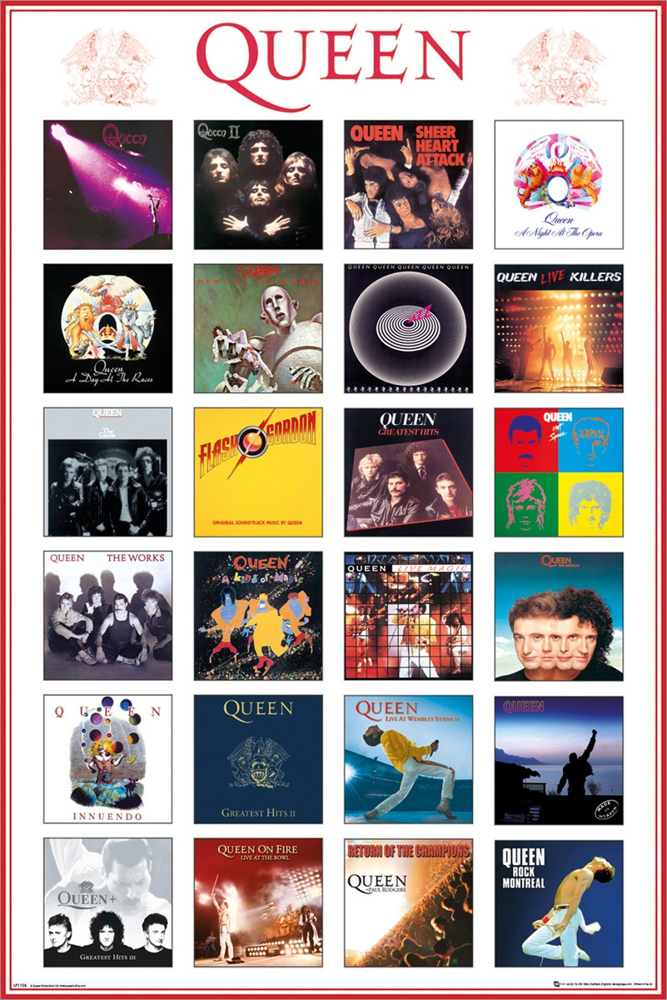

Albums of Queen
Queen (1973)
Queen II (1974)
Sheer Heart Attack (1974)
A Night At The Opera (1975)
A Day At The Races (1976)
News Of The World (1977)
Jazz (1978)
The Game (1980)
Flash Gordon (1981)
Hot Space (1982)
The Works (1984)
A Kind Of Magic (1986)
The Miracle (1989)
Innuendo (1991)
Made In Heaven (1995)
